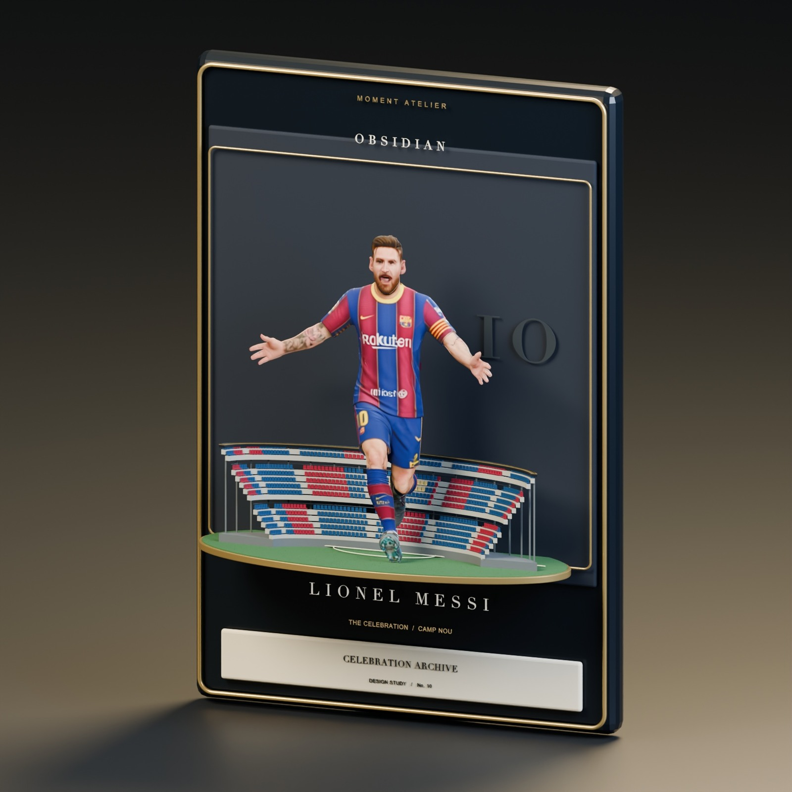
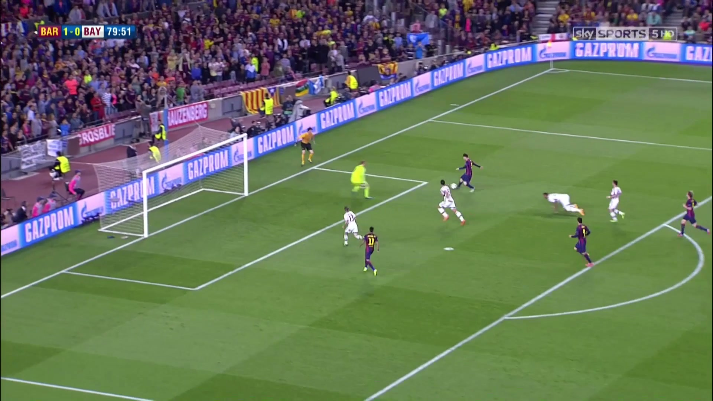

A MEMORY.
YOURS.
01 / CAPTURE THE MOMENT
就是这一刻。
在原片中暂停，抓取你的那一帧。
经典比赛回放 · 本轮以原片模拟直播
模拟直播巴塞罗那 × 拜仁慕尼黑2015.05.06
00:00.00 / 00:40.00
02 / MADE FROM YOUR MOMENT
为记忆，选一种形状。
你的定格画面、专属编号和回看入口，
一起进入这件收藏品。
YOUR FRAME等待捕捉

先在上方捕捉一个瞬间
每一件，都有来处。FRAME —
铭牌配色
用已精修的三维姿态合成周边；你抓取的原片帧会进入专属纪念卡与背面铭牌。人物姿态不随任意帧自动重建。
捕捉画面后，即可开始制作。
03 / YOUR MOMENT PASSPORT
这一刻，属于你。
✓专属入口已绑定
MOMENT90 / COLLECTIBLE
正在制作三维周边…
三维周边可拖动旋转、缩放，背面铭牌包含真实截帧和专属入口。
YOUR COLLECTION
收藏，开始有了故事。
收藏记录保存在这台设备。
专属链接可在另一台设备恢复相同内容。
第一件收藏品，从上方的一次捕捉开始。
一个瞬间。不止一次心动。